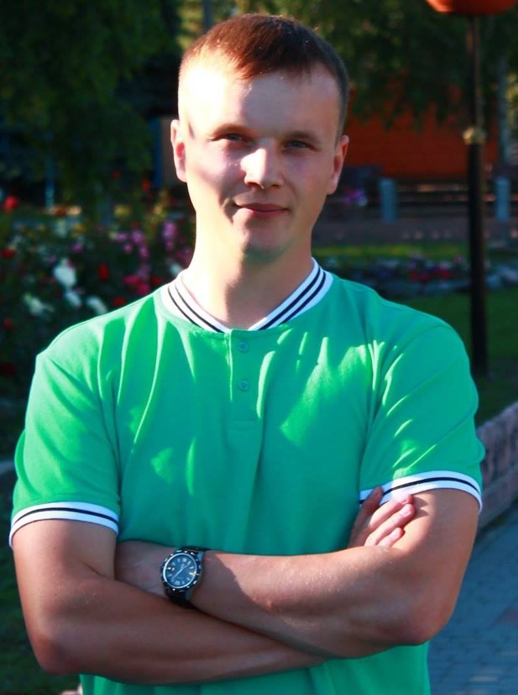

ua
facebook
Home
Resume

Yurii Kulyk
Expected position:Front-end developer
Expected income level: 600$
Date of birth:29.05.1992
Address of residence: Poltava region.,
Poltava district., township Chutove, str. Lugova 3, apt. 2
Contact Information:
Phone: +380669687877
Facebook: facebook
E-mail: elricua@gmail.com;
Skills:
- Free possession of a PC (Microsoft Office, work on the Internet)
- Quick and effective elimination of various technical problems of the PC and network
- Work with Windows XP, 7, 8, 10, graphics and multimedia editors
- Work in "СЕВ ОВВ" and SED "ASKOD"
Achievement:
- Conducted staff training to work in SED "ASKOD", which allowed to move from paperwork to electronic
Education:
- Poltava National Technical University named after Yuri Kondratyuk, Faculty of Management and Business,
specialty - innovation management
Experience:
OrganisationChutove District State Administration
Position:Chief Specialist of the Financial and Economic Support Department
- Responsibilities:
- Support in the proper state of functioning of the fleet of computer equipment, network and
peripheral equipment, software
- technical support for the functioning of postal clients of the departments of the district state
administration
- functioning of the ASKOD electronic document management system in proper condition
- software and hardware support for video conferencing, video conferences
About me:
- If I do something, I do it well. I like order when things are in place, I pay attention to detail. Friendly
to others and open to everything new. I look at life positively
In his free time he plays billiards and goes in for sports
Languages
- Ukrainian - (native);
- Russian - (fluently);
- German - (basic);
- English - (basic);